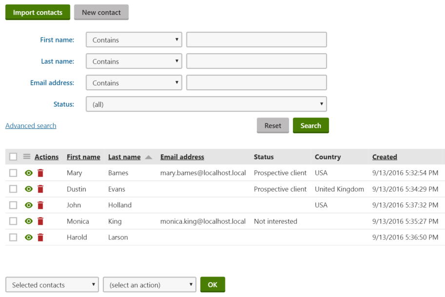
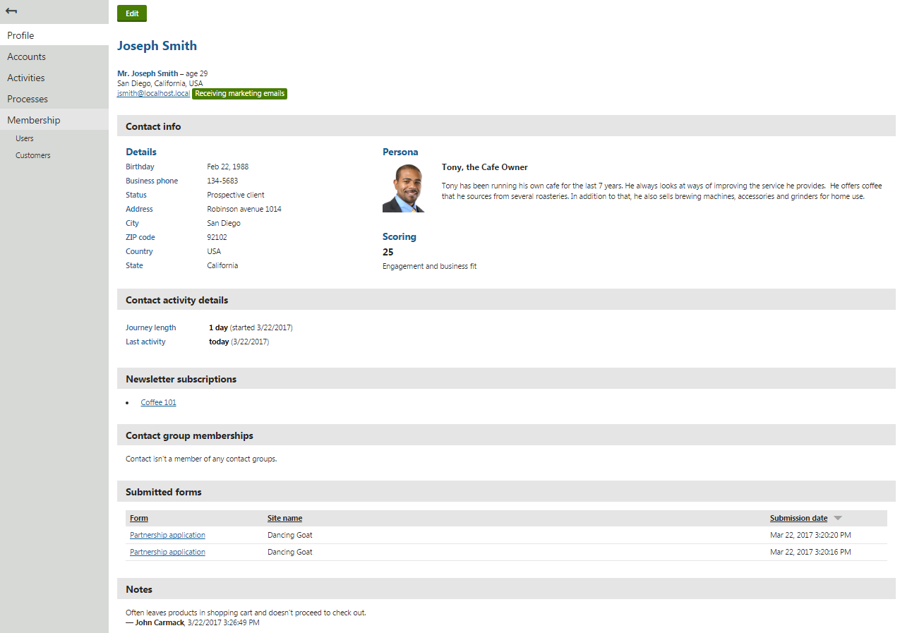
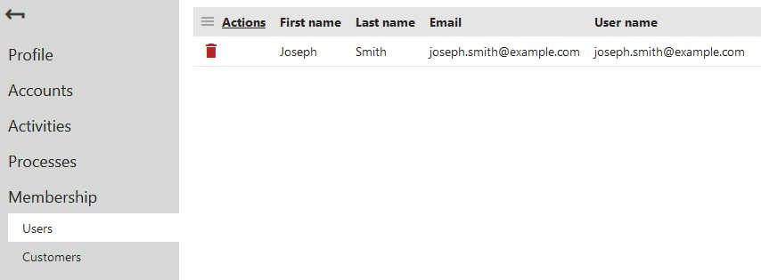

Working with contacts
Contacts represent website visitors and store marketing-related information about them. In the Kentico CMS edition, contacts cover only subscribed visitors (identified by email address). In the Kentico EMS edition, contacts cover both anonymous visitors (identified by a cookie) and registered users or customers (identified by email address). The system automatically gathers data about contacts based on the actions and input of the associated visitors.
Default cookie level or consent requirements
The contact tracking functionality in Kentico EMS only works if the Default cookie level setting is set to Visitor or All, or for visitors who give tracking consent and increase their cookie level. For more information, see Working with consents.
The Kentico CMS license allows you to:
Segment contacts into contact groups manually.
Moreover, the Kentico EMS license allows you to:
Segment contacts into contact groups or personas based on conditions. Use these segments to personalize your site and communication.
Track and analyze the activities of contacts on a website.
Define automated processes for communicating with contacts or performing other actions in the system.
Assign statuses to contacts (for example VIP contacts).
Associate contacts with accounts (companies or other bodies where the contact operates) and specific roles within accounts.
Managing contacts
The Contact management application allows you to manage all your contacts.

Viewing a list of contacts in the Contact management application
Click Import contacts to import contacts from a CSV file.
Click New contact to manually create new contacts.
To manage the existing contacts, use the following basic actions:
Delete (
 ) – removes the contact
) – removes the contactManage (
 ) – opens the contact managing interface, where you can view and edit the contact profile
) – opens the contact managing interface, where you can view and edit the contact profile
Deleting contacts from the system also causes deletion of their approved consent agreements. We recommend consulting this with a lawyer and recommend deleting contacts only when the consent agreements of your contacts will not be needed in the future.
Working with contact profile
The contact profile is the contact managing interface which displays all information that the system gathers about your contacts in one place. The contact profile in Kentico CMS only displays the contact's first name, last name, email address, which newsletters they are subscribed to and which contact groups they are members of. In addition, the contact profile in Kentico EMS also displays the contact's age, gender, city, country and further contact details, such as phone and address. Moreover, it displays which scores the contact has reached, which persona they are fitting, which forms have they submitted and notes that have been added to the contact.
Editing contacts
To edit the contact information:
Open the Contact management application on the Contacts tab.
Manage (
) a contact.On the Profile tab, click Edit.
While the Kentico CMS edition only allows you to gather and edit contact's first name, last name and email address, the Kentico EMS edition allows you to gather and edit the following information:
|
Category |
Editable contact fields |
|
General |
|
|
Contact details |
|
|
Address |
|
The Kentico EMS edition also allows you to add Notes about the contact. Click Insert timestamp to insert your timestamp into the notes – the default stamp contains the full name of your user account and the current date and time.
Filling in contact data in Kentico EMS
You do not need to enter the values of the fields on the Profile tab manually for all contacts. The system automatically collects and updates the data of each contact based on the information provided by the corresponding user.
Ask your administrator to:
Viewing contact profile
In addition to the information gathered by the editable contact fields, the Kentico EMS contact profile also displays the reached scores and fitting persona, contact activity details, newsletter subscriptions, contact group memberships, and submitted forms.
To be able to view the above-mentioned on-line marketing data in one place, on the contact's Profile tab, you need to:
Create personas and define persona rules, and wait till the contact fits a persona
Add the contact to a contact group manually or set up condition-based contact groups
Enable activity tracking and make sure that the On-line form submission activity is logged

Viewing the contact profile page
Marketing email statuses
The contact profile also displays marketing email statuses to inform you whether your contacts receive marketing emails or not:
Receiving marketing emails – contacts are receiving marketing emails
Opted out – contacts unsubscribed from marketing emails
Undeliverable – contacts reached the maximum number of bounces and do not receive any marketing emails
The Kentico EMS contact profile also allows you to manage accounts, activities, marketing automation processes, and memberships.
On-line marketing data in Kentico CMS
In addition to contact's first name, last name and email address, the Kentico CMS contact profile only allows you to view newsletter subscriptions and contact group memberships.
To be able to view the data on the contact's Profile tab, you need to:
Linking contacts with user accounts
The Kentico EMS system binds contacts with other objects that represent users. This includes:
To manage a contact's user relationships:
Open the Contact management application on the Contacts tab.
Manage (
) a contact.Switch to the Membership tab.
You can view and delete the existing relationships.

Linking a contact to a user account
Note: You do not need to bind contacts to user or customer accounts manually. The system automatically updates the contact memberships when visitors:
Register on a website
Sign in with a user account
Fill in customer data while making a purchase